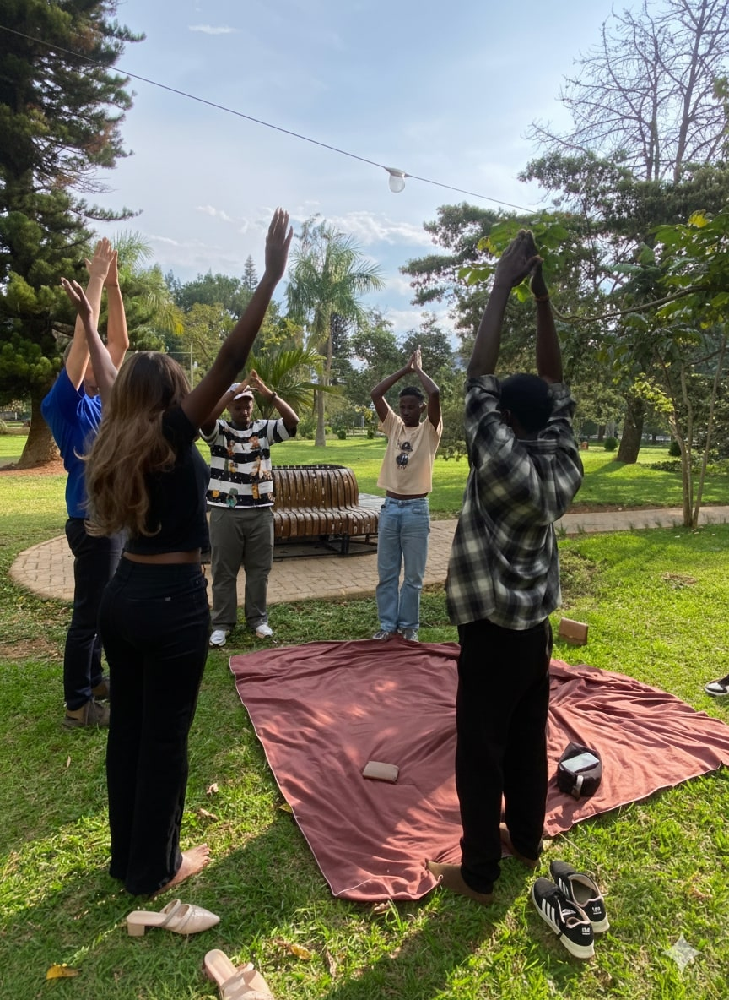
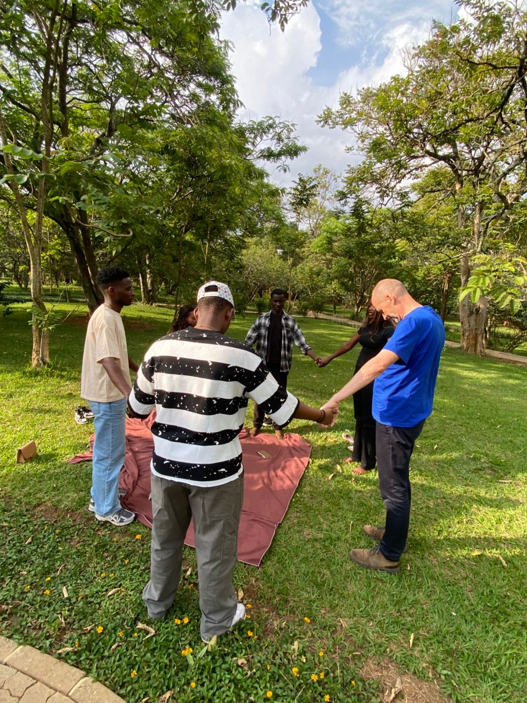
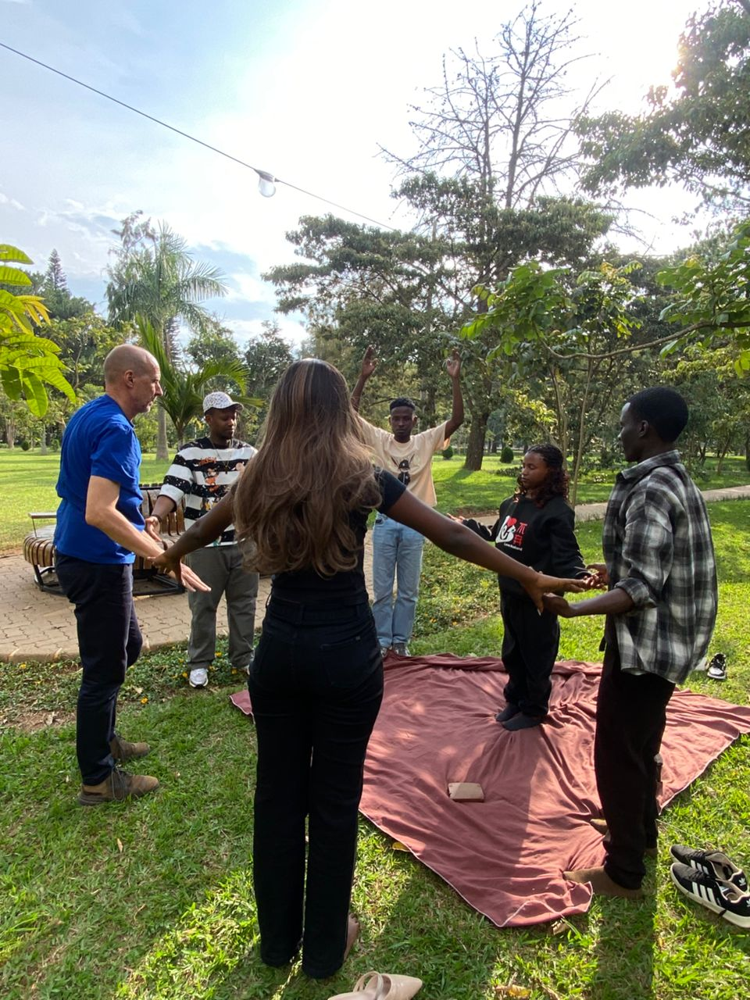
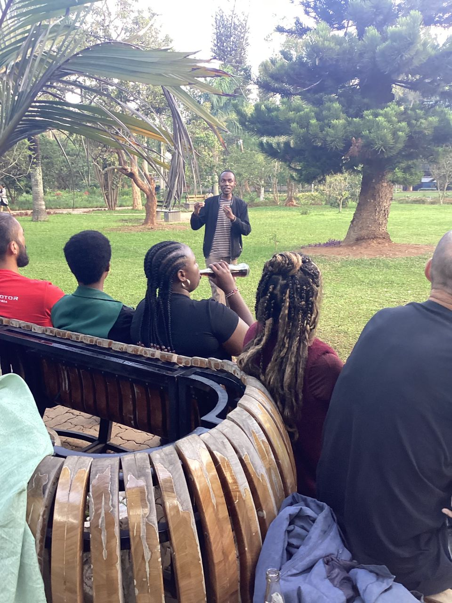
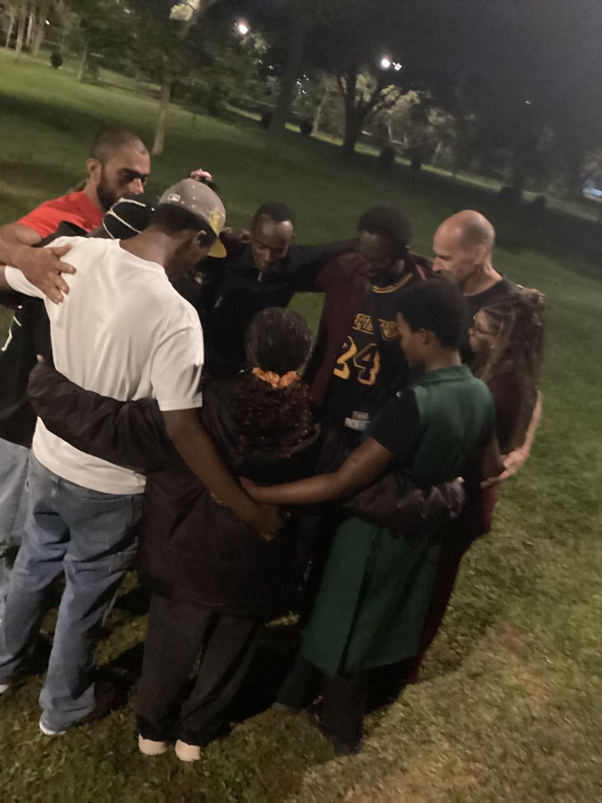
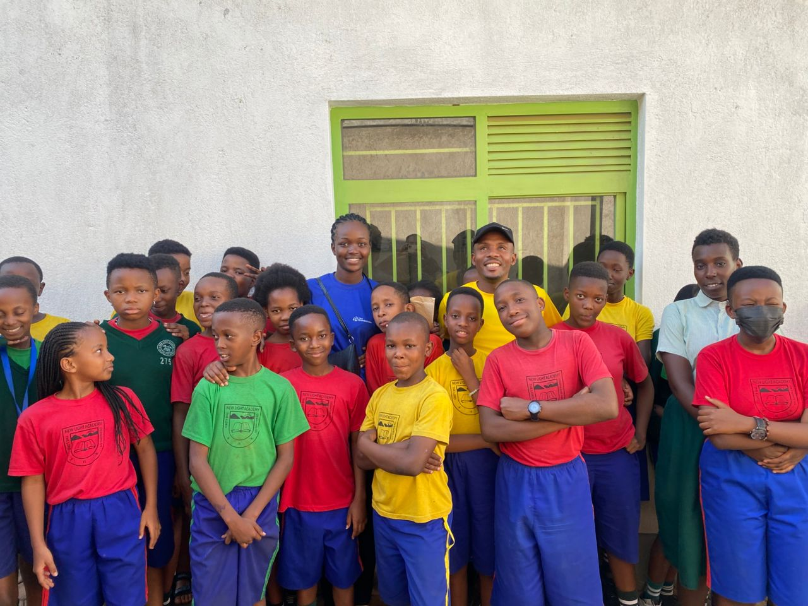
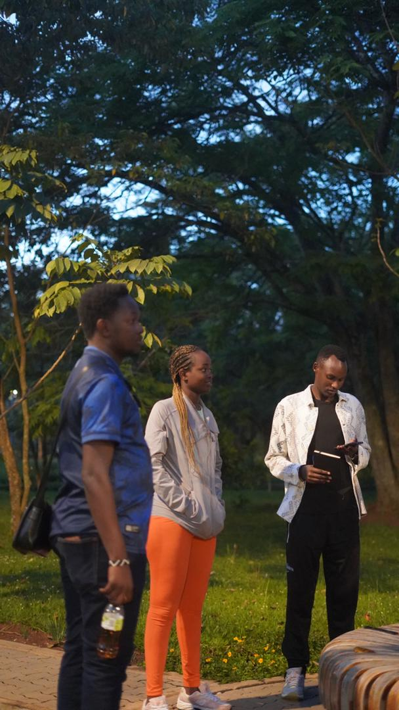
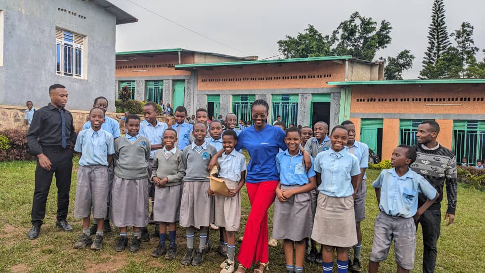

Promoting mental health, wellbeing, and safe spaces for young people.
We provide mental health awareness programs, community outreach
initiatives, and physical wellness activities that support the
wellbeing of young people and communities.
Beth Wellness Center was created to promote mental health awareness
and provide safe spaces where young people and communities can learn,
grow, and heal. The center was founded by a professional with a background in
counselling psychology and community mental health work, with the goal
of addressing the growing need for mental health education and
support.
Meet the Founder, Beth Akoth
Mission
To promote mental health, wellbeing, and safe community spaces through
education, wellness programs, and partnerships.
Vision
A community where mental health is understood, supported, and
prioritized.
Our Programs
School & Institutional Programs
Mental health awareness workshops
Student wellbeing programs
Emotional intelligence and stress management sessions
Peer support training
Community Outreach
Mental health awareness campaigns
Community wellness talks
Collaboration with hospitals and organizations
Workplace / Organizational Wellness
Employee mental health workshops
Stress and burnout management
Physical Wellness Programs
Yoga and mindfulness sessions
Pilates and body wellness programs
Group workouts and wellness activities
Our Impact
We organize mental health discussions, youth engagement programs, and
awareness activities to support communities and reduce stigma around
mental health.
Through outreach programs and wellness activities, we continue to
empower young people and communities to prioritize their wellbeing.
Partnerships
We welcome collaboration with organizations that share our mission of
promoting mental health and community wellbeing.
Schools and universities
Hospitals and health centers
NGOs and community organizations
Corporate and workplace partners
Mental Health Resources
We share educational materials, wellness tips, and articles that help
individuals understand and care for their mental health.
Gallery








Get Involved
Join our wellness community, volunteer, or partner with us to expand
mental health support in Rwanda.